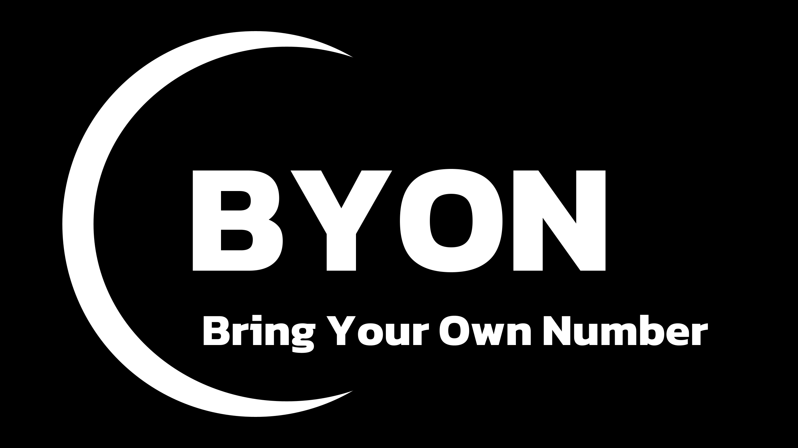

Works
This is a list of some of my recent compositions and other creative collaborations I have been involved with. Please feel free to contact me if you have any questions or score requests.
Click on the cards below for recordings and additional information:
BYON - Bring Your Own Number (2024)
BYON is an audiovisual piece with 1,000,001 movements. Little by little, these movements are being discovered by people on the internet, and whoever discovers a movement has the right to name it.
l(a, for cello and fixed-media (2024)
This piece is based on the poem of the same name, written by E. E. Cummings and first published in 1958. It was premiered by, and dedicated to, Otavio Kavakama.
Give the Order - Part 1, for viola and live electronics (2023)
Give the Order is a modular piece, and its form is defined by the performers. The main idea behind this piece was to further explore and expand on some pre-existing rhythmic techniques with the use of more modern technologies. Through Pure Data patches, written and improvised lines played in the viola give origin to mensuration canons and other interesting textures played by bells. This piece is dedicated to Natalie Stepaniak.
90°, for solo viola (2023)
I was inspired when I watched a video of Garth Knox performing his fourth Miniature for Viola D'Amore, Passarelle, an improvised piece that is played in what he calls a “sarangi position”. This unusual position allows the player to press the string with the nail of their left thumb, creating a different timbre. After incorporating this position into my comprovisatory projects, I started to find new sounds and colors that are either unachievable or hard to make when playing in a regular position. 90° was born out of my attempts to standardize, practice and find a notation for these sounds. The piece is dedicated to Garth Knox.
Pareidolia I, a 31-edo etude for (possibly) Lumatone (2023)
On this piece, an octave is divided into 31 equal steps. I developed a system of harmony and counterpoint based on the resolution of the two possible tritones that 31-edo offers, and this is my first exploration of said system. I am still searching for a Lumatone player to check if it would be feasible in their instrument, and this recording was created by me using Bitwig, a DAW that allowed me to precisely alter pitch, and find the frequencies I wanted.
PhoeniX Project, multimedia (2022)
This project (third place prize winner at the LSU Graduate Research Conference) is a proof of concept of what could be done by using a full-scale LED wall, Unreal Engine, and OSC in a live performance with music and dance. I wrote the graphic score used to create the agreed upon narrative and coherence between the dancer and violist, besides developing some Pure Data patches that would send OSC messages to Unreal Engine, and playing viola in the premiere. Other technologies explored on this project involved motion tracking for the dancer, MAX OSC messages based on the microphone input, and environmental light control.
A Daydream Chaconne, acousmatic (2023)
A Daydream Chaconne is a multimedia piece created by using the footage from the 1915 film Daydreams (Грёзы), by Yevgeni Bauer (Евгений Францевич Бауэр). It is part the first project made by the 4:3 series, a partnership between composers interested in writing music using public domain footage. All of the sounds you can hear in the music are derived from recordings of me playing the viola, and my challenge was to create movie music only by altering those sounds.
Call, interactive sound sculpture (2022)
This video was part of the first assignment for my minor of Experiment Music and Digital Media at LSU. It is the proof of concept for "Call", a sound sculpture that looks like a regular flower arrangement, but it calls people passing in front of it, inviting them to interact with the sculpure, which responds through sound.